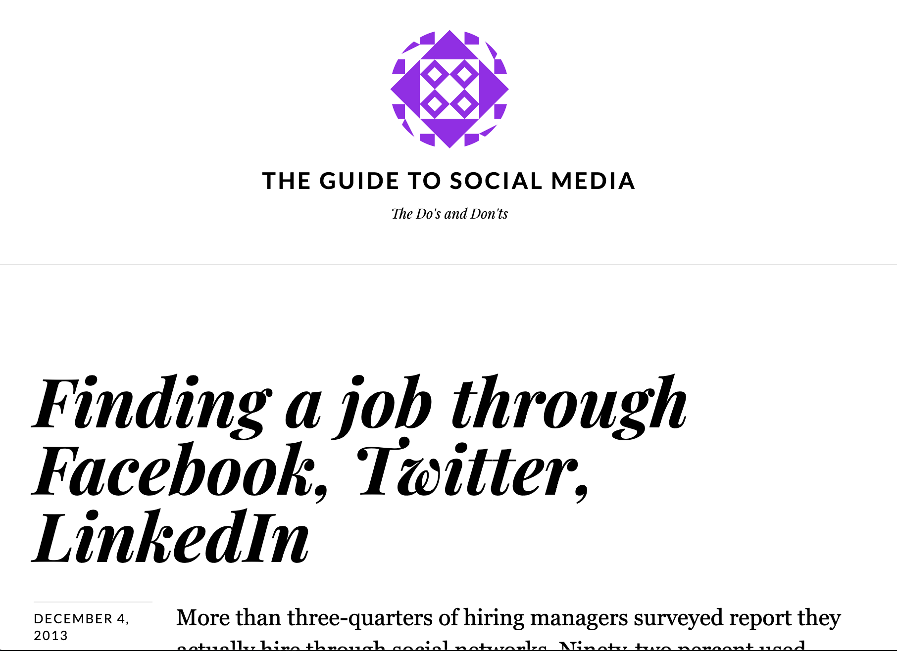

Writing
Consulting
Work
About
Writing.
Here's a selection of some of my work. For more pieces, find me on
Medium
, .
Date Night Beyond Dinner and Drinks
Go beyond the typical dinner and drinks routine with our list of unique and fun date ideas.
How to Get a Job After a Coding Bootcamp
The days/weeks/months after a bootcamp is completed come with a learning curve. This includes rejection and serious contemplations of what you’re doing with your life.
Six Ways to Hire For a Truly Diverse Company
There’s more to office diversity than gender and race.
What Happens When You Try to Collab on Instagram
In less than a few hours of going public, I received comments on several posts of mine proposing a collab.
Subtle Signs of Sexism at Work and How to Deal With Class
Women are still getting paid less and being promoted less frequently than their male counter parts.
Imposter Syndrome: Why Bootcamp Grads Have It
One of the biggest hurdles is continuing in a job and outputting comparable work to a colleague with a traditional computer science degree. This is when imposter syndrome comes in.
10 Self-Care Activities to Try at Home
Now that we have some more free time, it is beneficial to incorporate new habits into our daily life to help stay mentally relaxed and calm during this Pandemic.
When Not to Do the Interview Assignment
Job seekers are in a vulnerable position where they are expected to spend their own time, money and expertise in efforts to land a job.
Take It Personally When a Friend Unfollows You on Instagram
Every once in a while, I realize a friend, or someone I am on good terms with, unfollows me on Instagram.
20 Ways Your Workplace is Toxic
Companies with a political process of promoting run into issues where employees assert dominance.
Requesting Time Off Gives Me Anxiety
I know health is important, and I try to be as convenient as possible. I schedule doctors appointments over a span of several months. I book appointments on the least busiest days of the week, just to be out of office for two hours on a Tuesday.
I Don’t Like My Hometown and Why You Might Not Either
It’s an unsettling feeling to feel like you don’t belong where you grew up. You find it difficult to connect with your old friends. You don’t feel at peace where you parents want to retire to, and have you around.
I Got Rejected Because I Failed a Personality Test
My career coach once said to me, “pay attention to how your interview process goes with a company, it will give you a lot of insight into how the company is.”

Finding a Job Through Facebook, Twitter, Linkedin
More than three-quarters of hiring managers surveyed report they actually hire through social networks.
Midtown Bars Do Big Business
With several bars competing for the attention of students and locals, the prices are low. A convenient location, right across from campus, makes Midtown Gainesville busy at all times.